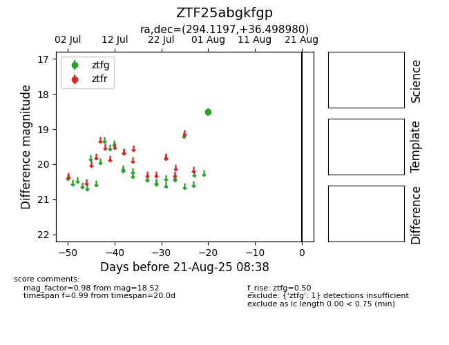

Target ZTF25abgkfgp at 2025-08-21 08:38, see:
FINK: fink-portal.org/ZTF25abgkfgp
Lasair: lasair-ztf.lsst.ac.uk/objects/ZTF25abgkfgp
ALeRCE: alerce.online/object/ZTF25abgkfgp
alt names
ZTF25abgkfgp (ztf,alerce)
coordinates:
equatorial (ra, dec) = (294.1197,+36.49898)
galactic (l, b) = (70.2481,+7.55769)
photometry
last ztfg=18.52
1 ztfg detections
